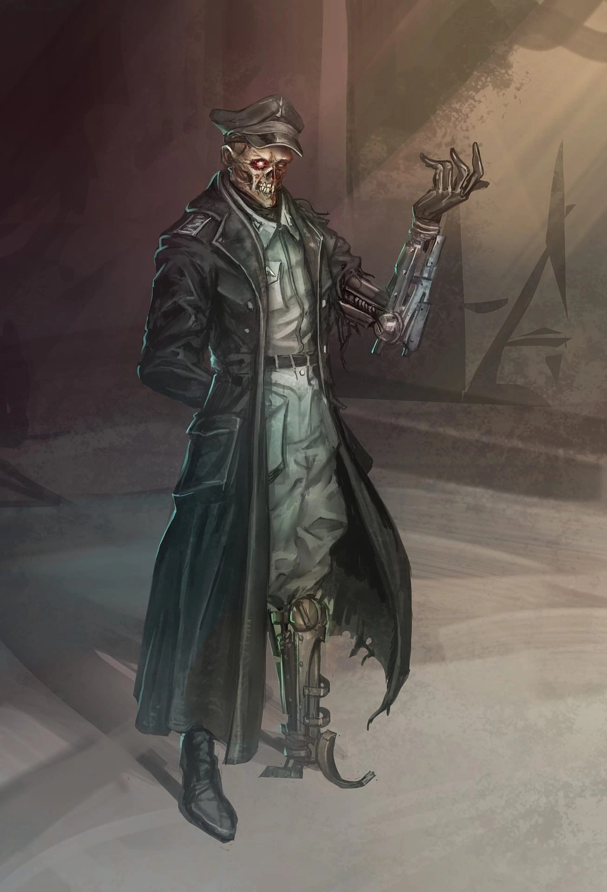

Надеемся, вы понимаете, что здесь не курорт какой-нибудь? Если ждете света и счастья, то вот вам пистолет — лучше застрелитесь сразу. Убрать ствол? Ну хорошо. Значит вы готовы немного послушать. Вам, должно быть, интересно узнать, что тут вообще происходит? Советую быть внимательным, чтобы потом не жаловаться.
Вы на Виридии. Да, на Виридии. Да, так называется планета. Хватит переспрашивать, я нервный. Если абстрагироваться от того, что на ней происходит, то достаточно приятное место. Климат немного прохладный, но в самый раз. Есть и раскаленные пустоши, и леса, и степи, и джунгли. Даже Ледяная Пустыня есть. Она правда не всегда была, но это уже отдельный разговор. Всего у нас 3 континента: Верландия, Черра и Кирг. Последний — самый крупный. Ниже карта, можете взглянуть. Карту попрошу не ругать, рисовал ее лично.

Теперь о флоре и фауне. Но сначала, ответьте на вопрос небольшой, пожалуйста. Драугеров видели когда-нибудь? Нет?! Значит в другой раз поговорим. Это же ужас — драугеров не знать… с кем я беседую вообще?
Люди на Виридии интересные. Знаете, иногда создается впечатление, что они специально создают для себя проблемы. Один из моих предков, наверное, застал те времена, когда речь велась о покорении космоса и создании полноценного искусственного интеллекта. Мы были в шаге от того, чтобы действительно стать хозяевами мира. Потом пришел Мор. Никто не знал откуда он взялся, как его лечить и что делать дальше. Но если вдруг ты начинал обильно потеть, кашлять кровью и терять вес, то мог сразу идти на кладбище, предварительно облившись чем-нибудь горючим, чтобы упростить работу медицинским службам. Мор выкашивал всех подряд без разбору, делал это до ужаса методично. Видели когда-нибудь эпидемию среди кроликов? А теперь представьте, что такое происходит в масштабах целой планеты.

Фактически, заправляла тогда всем интернациональная церковь, а правительства были ей полностью лояльны. Ну и дураки в рясах… Нет, не дергайтесь, сейчас церковь ликвидирована, так что нас не расстреляют. В общем, жрецы решили, что все это — кара богов, обрушившаяся на человечество за то… (Про богов я расскажу не сегодня, хватит перебивать!)…,что оно хочет встать в один ряд с ними. При помощи чего? Технологий, конечно! За несколько десятков лет были уничтожены почти все новейшие достижения прогресса. Да, вы не ослышались. Вместо того, чтобы изучать Мор в лабораториях, ученые эти самые лаборатории сжигали! Конечно, были и те, кто не поддался религиозному фанатизму. Думаю, вы понимаете — даже самый крепкий дух легко сломит обычная пуля. Церковное безумие продолжалось много лет, а Мор… Скажем так… Ушел он так же неожиданно, как и явился.
Теперь почти никто не помнит, как было тогда, до Мора. Мы снова пользуемся печатными машинками и телеграфами. Солдаты прячутся в окопах, сжимая в руках допотопные винтовки, а над их головами летают аэропланы. Позиционная война вновь стала единственно верной стратегией. Нет, разумеется до нас дошла жалкая часть наследия тех времен— например, гигантские ЭВМ хоть и выглядят диковинкой, но все же являются частью действительности. Ходят слухи, что сохранилось даже страшное климатическое оружие, которое и стало причиной появления Ледяной Пустыни, но не забивайте себе сейчас голову.
В настоящее время на политической арене действуют 4 государства. Если хотите, то можете взглянуть на еще одну мою карту, именно от нее мы и будем отталкиваться.

На юге самого большого материка под названием Кирг расположилось ОИКВ. Как эта аббревиатура расшифровывается? Хах, а никто не помнит — по этой причине государство часто называют просто «Империя». Не улыбайтесь только так широко. Если бы вся гниль Виридии стремилась в одно место, то выбрала бы она, пожалуй, именно эту страну. Я даже не могу нормально описать тамошний строй. Скажем так, немного отдает извращенным донельзя социализмом. При этом, во главе государства находится Император. Зовут его Альберт Стоун, и, кажется, он немного поехавший. Император считает, что полностью контролирует ОИКВ, но как же далека эта наивная уверенность от истины. Представьте гигантский агонизирующий организм, где каждая часть тела работает отдельно от других. Вот это и есть ОИКВ. Большинство систем действуют как попало или отказывают вовсе, чиновники чинят беспредел, а огромных размеров армия находится в таком плачевном состоянии, что может взять противника только количеством. Зато пропаганда работает как надо. Разруху пытаются скрыть при помощи парадов, агитационных плакатов и газетных статей. Ну и конечно же не забывают про машину репрессий, которая является последним, зато самым эффективным средством, спасающим ОИКВ от окончательного развала. Другие страны ОИКВ опасаются, но этот страх скорее эхо тех далеких времен, когда Империя была действительно могучей военной державой.

На севере Кирга расположилась Септентрионская Империя. Относительно неплохая страна, надо признать. Почти полная противоположность ОИКВ. Жители СИ чувствуют себя, наверное, лучше всех остальных. Достать какой-нибудь товар из этой страны — счастье для иностранца. Такого благополучия получилось достичь под руководством мудрого императора Фредерика Лларитуса Септгена. Кстати, некоторые зовут его «Королём с добрым сердцем». Но во всём есть и тёмные стороны. Император у них мудрый и отрицать этот факт — себе дороже. От подобного своеволия до петли несколько шагов. Еще могут поджарить на электрическом стуле, или поупражнять солдат в стрельбе по живой мишени. Это от тяжести преступления зависит, а проявлять инициативу и говорить что-то плохое про ИМПЕРАТОРА - это особо тяжкое преступление. Сесть на электрический стул — самое позорное. С ним, кстати, чаще всего казнокрады встречаются. Септген заботится, чтобы все богатства доставались только ему.
Сама страна пытается строить из себя конституционную монархию, но на деле она абсолютная. Фредерик сохраняет свое влияние на все аспекты жизни, следит за тем, чтобы все его любили, а если кто-то и не любит, то это шпион южного соседа, или ещё какой-то засланец. Истинный северянин ни на что не разменяет короля с добрым сердцем.

ОИКВ и Септентрия — 2 основные силы на Виридии. Еще до Мора они были единым государством под названием Ллурингинская Империя, а сейчас являются его жалкими осколками. Надо признать, весьма острыми. Если бы я стал загибать пальцы, считая сколько раз эти страны были в шаге от глобальной войны, то мне бы нужно было как минимум несколько дополнительных рук. Восточное Содружество, созданное для иллюзии сотрудничества — ширма, за которой скрываются взаимная ненависть и направленные друг на друга стволы тяжелых орудий.

О, Черра… Яркий пример того, к чему способны привести постоянные лишения и унижения. Занимает одноименный материк на западе от Септентрии. История Черры уходит в глубины веков, но сейчас мы ограничимся тем фактом, что раньше она была колонией своего восточного соседа. Очень непокорной колонией… Я не буду описывать все попытки бунтов и череду почти удавшихся революций на Черре, которые происходили там ежемесячно. Терпение септентрионцев было на исходе, а многолетняя эпидемия только озлобила их. С Черрой решено было покончить и заодно припугнуть весь остальной мир. Не буду долго распинаться, хотя хочется. Самое гуманное государство на свете отыскало остатки своего ядерного арсенала, оставшегося от предков, а потом испытало его эффективность на непокорной колонии. Города Черры охватил радиоактивный пожар, оставив после себя обугленные руины и практически полностью уничтоженную инфраструктуру. Через некоторое время, как бы издеваясь, Септентрия даровала материку независимость. Да уж… Жуть, согласитесь? Сейчас эта страна пытается отстроить себя заново, в ней царят реваншистские настроения, а у штурвала находится Военный Совет. Практически все ресурсы тратятся на усиление армии и создание бесконечных линий укреплений, которые смогли бы защитить Черру от гипотетического вторжения. Обычные граждане живут в нищете, но с замиранием сердца ждут того дня, когда их родина будет готова отомстить бывшей метрополии. Черра ведет активное сотрудничество с ОИКВ, которое время от времени помогает ей со снабжением.
Одно название чего стоит! Люд там конечно весёлый, но давайте по порядку.

ВФФ или Верландия расположилась на южном материке с таким же названием. Это тоже бывшая колония, но не Септентрии, а ОИКВ. В отличие от северного соседа она откололась достаточно мирно: имперская администрация ослабела и без особого сопротивления позволила создать суверенное государство. Во все времена там жили бедно и любили во всех бедах винить проклятых имперцев. Это привело к росту популярности тех, кто обещал навести порядок железной рукой. В конечном итоге ко власти пришли фашисты. Живут люди при фашистах правда не сильно лучше, но знать это необязательно. Лучше вот армией гордитесь, смотрите какие пушки. Но про то, как тяжело жить тут конечно лучше не говорить — такие смельчаки обычно пропадают без вести.
Если кратко, то как-то так, товарищ. Я лишь прошелся по самым основам устройства Виридии. Хотелось бы рассказать и о Ледяной Пустыне, и о Расколе, и о войне ОИКВ с Септентрионской Империей… Еще вспомнил забавную историю про приход Альберта Стоуна к власти, кстати. Ну и анекдотов у меня полно, целая пачка. Но это все не сегодня, а как-нибудь потом.